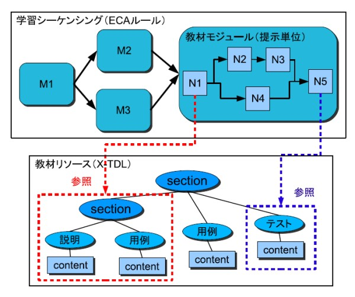
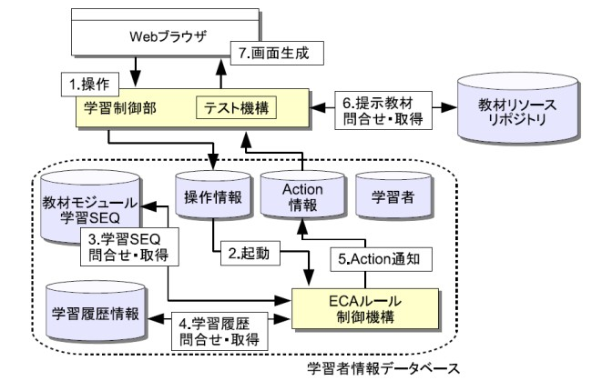

適応型eラーニングシステムADEL
ADELにおける教材
ADEL で扱われる教材は，図1 に示すように条件付き有向グラフの形で表される．このグラフ全体を学習シーケンシングと呼び，Event，Condition，Action の組であるECA ルールにより記述する．グラフの各要素を教材モジュールと呼び，一度に提示する教材の単位として定義している．また，教材モジュール自身も内部にグラフ構造を 持っており，学習者の状態に応じて提示する内容を切り替えることができる．教材モジュール内のグラフの各要素はX-TDLで記述された教材リソースの部分木を参照する．ここで参照された部分木の内容が最終的に学習者に提示される教材となる．このように学習シーケンシングはシステムに組込みでない外部情報として定義され ており，これにより教材の再利用やルールの柔軟な変更といったことが可能になる．教材設計者は自身の教授戦略をこの形式で表現することにより適応的な教材 を提供することができる．

図１：ADELの教材構造
システムアーキテクチャ
ADEL のアーキテクチャを図2 に示す．ADEL は学習制御部，学習者情報データベース，教材リソースリポジトリから構成されている．学習制御部はWeb ブラウザから学習者の状態変化や要求を検知し，学習者情報データベースへと伝達する．学習者情報データベース内のECA ルール制御機構は，状態変化や要求の情報をデータベースが受け取るのをトリガとして起動し，学習履歴情報から参照される実行中の学習シーケンシングの内容に基づいて，システムが次 に何を実行すべきかの意思決定を行う．学習制御部はECA ルール制御機構から返された情報を読み取り，次の教材モジュールの提示，即時的なメッセージの送信，提示教材の難易度の変更，学習の継続如何等の Action を実行する．

図2：システムアーキテクチャ